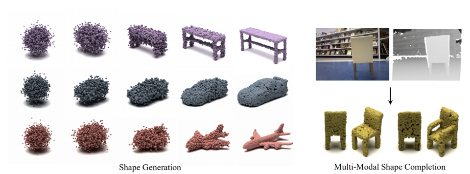
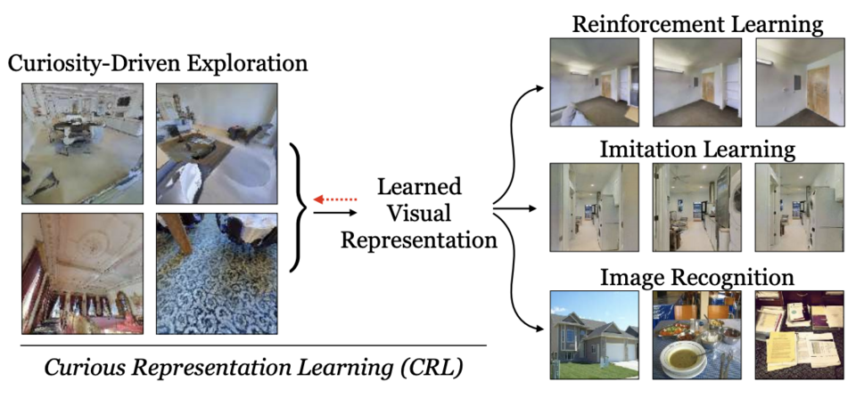
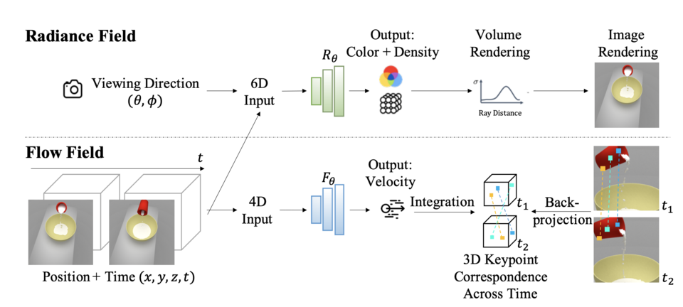
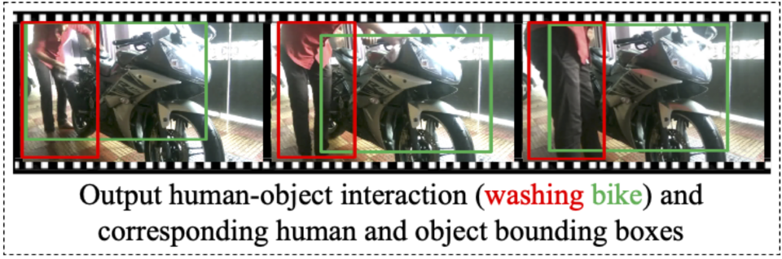

3D Shape Generation and Completion through Point-Voxel Diffusion
ICCV 2021 · Oral
pvd_preview.mp4
6 media files grouped by the listed publication venue and year.
6 of 6
ICCV 2021 · Oral
pvd_preview.mp4

ICCV 2021 · Oral · Alternate media
pvd.png

ICCV 2021
crl.png
ICCV 2021
nerflow_preview.mp4

ICCV 2021 · Alternate media
nerflow.png

ICCV 2021
vehico.png
No matches.